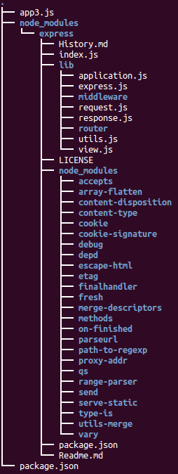

MEAN Stack : MongoDB, Express.js, Angular.js, Node.js
Node.js will be used for our server side layer. A few Node packages will be used to manage and maintain our application.
Express.js will be acting as our server, and Express.js is responsible for interacting with MongoDB (fetching and saving data).
Then, our client side Javascript framework would be Angular.js which is responsible for managing the different states of UI and syncing the data.
Picture source: AngularJS to MongoDB
- MongoDB - Database. MongoDB is a document-oriented NoSQL database. It stores data in JSON-like format and performs SQL-like queries against it.
- Express - Web framework that runs on NodeJS which allows us to build web applications and APIs endpoints. It provides HTML template solutions (jade, ejs, handlebars, etc.) and CSS precompilers (less, stylus, compass, etc.).
Middlewares are added to ExpressJS stack using app.use, app.get, app.delete, app.post, or app.update.

Picture source: Creating RESTful APIs With NodeJS and MongoDB Tutorial (Part II)
Middleware is a stack of processors that runs on a request made to the server. We can have any number of middleware that will process the request one by one in a serial fashion. We may alter the request input, log output, add data and pass it to the next() middleware in the chain.
- AngularJS - Frontend framework.
- Node.js - Server platform. It's Javascript running outside the browser.
Here is the list of changes when we build Web application using MEAN.
- It brings OS independence.
Switching the base platform from an OS (Linux) to a JavaScript runtime (Node.js) - Node.js also replaces Apache in the LAMP stack.
Node.js is not just a simple web server. Actually, we don't deploy our finished application to a stand-alone web server. Instead, the web server is included in our application and installed in the MEAN stack. As a result, the deployment process is much simpler because the required version of the web server is explicitly defined along with the rest of our runtime dependencies. - SQL to a NoSQL
The move from a SQL to a NoSQL, schemaless, documentoriented persistence store such as MongoDB represents a fundamental shift in persistence strategy.
We'll spend less time writing SQL and more time writing map/reduce functions in JavaScript.
We'll also cut out huge swaths of transformation logic, because MongoDB emits JavaScript Object Notation (JSON) natively. Consequently, writing RESTful web services is easier than ever. - single-page application (SPA) - the move from server-side page generation to a client-side single-page application (SPA) orientation
With Express, we can still handle server-side routing and page generation, but the emphasis is now on client-side views, thanks to AngularJS. - From synchronous to event-driven and asynchronous.
- From a page-centric view of our application to one that is component-oriented.
Node.js allows us to run JavaScript code in the backend, outside a browser.
In order to execute the JavaScript, we should run it in the backend: it needs to be interpreted and, well, executed. This is what Node.js does.
Node.js is a JavaScript runtime.
It is literally the same JavaScript engine (named V8) that runs inside of Google Chrome, except that with Node.js, we can run JavaScript from the command line instead of in our browser.
Actually, JavaScript the programming language has no native capabilities for Document Object Model (DOM) manipulation or for making Ajax requests. Browsers provide DOM APIs so that we can do that sort of thing with JavaScript, but outside of the browser JavaScript loses those capabilities.
Here's an example. Open a JavaScript console in our browser (see Accessing our browser's developer tools). Type navigator.appName. After we get a response, type navigator.appVersion.

Now, let's create a file named console.js. Type the same commands in the file, wrapping each in a console.log() call:
console.log(navigator.appName); console.log(navigator.appVersion);
Save the file and type node console.js to run it:
$ node console.js
/home/k/TEST/Node-Express/myapp4/console.js:1
ion (exports, require, module, __filename, __dirname) { console.log(navigator.
^
ReferenceError: navigator is not defined
at Object. (/home/k/TEST/Node-Express/myapp4/console.js:1:75)
at Module._compile (module.js:456:26)
at Object.Module._extensions..js (module.js:474:10)
at Module.load (module.js:356:32)
at Function.Module._load (module.js:312:12)
at Function.Module.runMain (module.js:497:10)
at startup (node.js:119:16)
at node.js:906:3
As we can see, navigator is available to us in the browser but not from Node.js. Now we know that running JavaScript in the browser is different from running it in Node.js.
We got the error because the Module we need isn't loaded. (Modules are another major difference between running JavaScript in the browser and running it in Node.js) We should make a change the contents of console.js to get similar information from Node.js:
console.log(process.versions) console.log(process.arch) console.log(process.platform)
Note that we're using process module.
Type node console.js again, and we'll see output:
$ node console.js
{ http_parser: '1.0',
node: '0.10.32',
v8: '3.14.5.9',
ares: '1.9.0-DEV',
uv: '0.10.28',
zlib: '1.2.3',
modules: '11',
openssl: '1.0.1i' }
x64
linux
Node.js uses the Google V8 JavaScript engine to execute code, the same runtime environment for JavaScript that Google Chrome uses.
A large percentage of the basic modules are written in JavaScript.
Node.js contains a built-in library to allow applications to act as a Web server without software such as Apache HTTP Server, Nginx or IIS.
Node.js is a way of running JavaScript on the server, but it's more than that.
Node.js applications are written in JavaScript, and can be run within the Node.js runtime. As a Javascript platform for server-side programming, it allows users to build network applications quickly. By leveraging Javascript on both the front-end and the back-end, development can be more consistent and be designed within the same system.
Node.js is a high performance, light weight platform which uses an event-driven (we can register some function to some event and that function will then be executed once the event is triggered), non-blocking I/O model, making this a perfect match for data-intensive real-time applications that run across distributed devices.
It uses Google's V8 Javascript engine to parse the Javascript code. Technically speaking Node.js is Javascript 40% & C++ 60%.
So, Node.js is really two things: a runtime environment and a library.
$ sudo apt-get update $ sudo apt-get install nodejs ... Setting up nodejs (0.10.25~dfsg2-2ubuntu1) ... ...
In most cases, we'll also want to install npm, which is the Node.js package manager:
$ sudo apt-get install npm
This will allow us to easily install modules and packages to use with Node.js.
Following table shows how we can use npm commands:
| npm command | details |
|---|---|
npm install |
Install dependencies |
npm start |
Start a development web server |
npm test |
Run the unit tests with Karma |
npm run e2e |
Intall the Selenium driver for end to end testing |
npm run selenium-install |
Run the end to end tests with Nigthwatch/Selenium |
npm run unit-test-watch |
Watch the code and run the unit test |
npm run build |
Create a production build |
npm run bundle-size |
Create a report to show the size of each dependencies |
npm run clean |
Clean the project |
Because of a conflict with another package, the executable from the Ubuntu repositories is called nodejs instead of node.
$ which nodejs /usr/bin/nodejs $ nodejs -v v0.10.25
If we want to use node instead of nodejs, we can set symbolic link:
$ which nodejs /usr/bin/nodejs $ sudo ln -s "$(which nodejs)" /usr/bin/node $ which node /usr/bin/node
From now on, we can simply use node command. Let's check the version:
$ npm -v 1.4.28 $ node -v v0.10.32
That's it!
Now, we have Node.js and NPM installed, and we should be ready to dig deeper into using the platform.
As we discussed in the previous section, Node.js uses an event-driven, non-blocking I/O model that makes it lightweight and efficient, perfect for data-intensive real-time applications that run across distributed devices.
event-driven means that we can register some function to some event and that function will then be executed once the event is triggered. Here is an example (code from Delving into Node.js and Express web framework):
<!DOCTYPE html>
<html>
<head>
<title></title>
</head>
<body>
<input type="text" id="myInput">
<input type="button" id="myButton" value="Show Name">
<script type="text/javascript">
var myButton = document.getElementById('myButton');
function outputText(){
var myInputText = document.getElementById('myInput').value;
alert(myInputText);
}
myButton.addEventListener('click', outputText);
</script>
</body>
</html>
In the simple example, we've registered a function outputText to a buttons' click event with an id of myButton.
Stackoverflow explains this topic:
Node.js is built upon libuv, a cross-platform library that abstracts apis/syscalls for asynchronous (non-blocking) input/output provided by the supported OSes (Unix, OS X and Windows at least).
Asynchronous IO:
In this programming model open/read/write operation on devices and resources (sockets, filesystem, etc.) managed by the file-system don't block the calling thread (as in the typical synchronous c-like model) and just mark the process to be notified when new data or events are available.
In case of a web-server-like app, the process is then responsible to figure out which request/context the notified event belongs to and proceed processing the request from there. Note that this will necessarily mean you'll be on a different stack frame from the one that originated the request to the OS as the latter had to yield to a process' dispatcher in order for a single threaded process to handle new events.
Node.js tackles the problem leveraging JavaScript's language features called closures.
Every function that requests IO has a signature like function(...parameters..., callback) and needs to be given a callback that will be invoked when the requested operation is completed.
Closure:
Javascript's support for closures allows us to use variables we've defined in the outer (calling) function inside the body of the callback - this allows to keep state between different functions that will be invoked by the node runtime independently.
function parent() {
var message = 'Hello Javascript Closure';
function child() {
alert (message);
}
return child;
}
var closureObj = parent();
closureObj(); //this will alert Hello Javascript Closure
The parent() function returns the child() function, and the child() function is called after the parent() function has already been executed.
A closure is not only the function, but also the environment in which the function was created (which may be counter intuitive because usually the parent() function's local variables should only exist while the function is being executed).
In this case, the closureObj() is a closure object that consists of the child() function and the environment variables that existed when the closure was created, including the message variable.
In the prompt, type node and hit enter. This will take us to the Node world!. This is known as Node REPL (Read-Eval-Print-Loop), prompting us for a JavaScript line.
REPL is a virtual environment. Using this shell program, we can execute pretty much any Node.js/JavaScript code. It's even possible to include modules and work with the file system!
Now type console.log("Hello Node!!");, then we will get a reply Hello Node!! as shown below:
$ node
> console.log("Hello Node!");
Hello Node!
undefined
>
(^C again to quit)
>
$
We can use -e option which allows us to run inline JavaScript/Node.js-for example:
$ node -e "console.log(new Date().getTime());" 1439856544825 $ node -e "console.log(process.pid)" 26588 $ node -e "console.log(process.cwd())" /home/k/NodeJS
If we want, we can use a file instead of command line. Let's write a file with the same line of code and name it helloNode.js:
console.log("Hello Node!");
Let's run it:
$ node helloNode.js Hello Node!
Here is an excerpt from Practical Node.js Building Real-World Scalable Web Apps on ubiquitous tutorials/samples of Hello world code:
There are more and more books and online resources being published that cover Node.js basics (e.g., how-to's of Hello World and simple apps). For the most part, these tutorials rely on core modules only or maybe one or two Node Package Manager (NPM) packages.
This "sandbox" approach of tutorials is easy and doesn't require many dependencies, but it can't be further from the actual Node.js stack. This is especially true with Node.js, the core of which-by design-is kept lean and minimal.
At the same time, the vast "userland" (i.e., NPM) provides an ecosystem of packages/modules to serve specific granular purposes.
Therefore, there is a need to show effectively how Node.js is used in the industry and to have it all in one place-the all-encompassing practical resource that can be used as a learning tool, a code cookbook, and a reference.
Let's start with the server module. Create the file server.js with the following code:
var http = require("http");
http.createServer(function(request, response) {
response.writeHead(200, {"Content-Type": "text/plain"});
response.write("Hello World");
response.end();
}).listen(8080);
We just wrote a working HTTP server. Let's execute our script with Node.js:
$ node server.js
Now, open our browser and point it at http://localhost:8080/. This should display a web page that says "Hello World".
Let's look into what's actually going on here.
The first line requires the http module that ships with Node.js and makes it accessible via http.
Then, we call one of the functions the http module offers: createServer(). This function returns an object, and this object has a method named listen, and takes a numeric value which indicates the port number our HTTP server is going to listen on.
The line creates a server with a callback function which contains the response handler code.
The request and response arguments have all the information about a given HTTP request and response correspondingly.
Express expands an example like this to handle more-complex routes and serve up both static and dynamically generated resources.
We could have written the code that starts our server and makes it listen at port 8080 like this:
var http = require("http");
var server = http.createServer();
server.listen(8080);
That would start an HTTP server listening at port 8080 and doing nothing else (not even answering any incoming requests).
The really interesting part is the function definition right there where we would expect the first parameter of the createServer() call, and this function definition is the first (and only) parameter we are giving to the createServer() call. Because in JavaScript, functions can be passed around like any other value.
Note that we pass the createServer function an anonymous function.
We could have done it not using anonymous function:
var http = require("http");
function onRequest(request, response) {
response.writeHead(200, {"Content-Type": "text/plain"});
response.write("Hello World");
response.end();
}
http.createServer(onRequest).listen(8080);
Why are we doing it that way?
Why Node.js applications have to be written this way?
To understand it, we need to know how Node.js executes our code: Event-driven asynchronous callbacks!
As mentioned earlier, with node we can construct a Web server. Here is the file, server.js, doing it.
Node.js has a module (libraries written in C) loading system. We'll start by loading a HTTP module using the require() with the port we want our server to run on.
Then, we need to create a new Server and this function takes a callback. Note that everything in Node is Async. The anonymous function takes in the request and response object. In our case, the response is a string "Hello HTTP!".
var http = require("http"),
port = 8080;
var server = http.createServer(function(request,response){
response.writeHeader(200, {"Content-Type": "text/plain"});
response.write("Hello HTTP!");
response.end();
});
server.listen(port);
console.log("Server Running on "+port+".\nLaunch http://localhost:"+port);
That's it. Now, we have our HTTP server which understands any HTTP requests, and can respond accordingly.
The following two lines sets a response header, describing the content type we are dispatching, and writes our message to the client.:
response.writeHeader(200, {"Content-Type": "text/plain"});
response.write("Hello HTTP!");
Unless the line:
response.end()
is encountered, the response will not be dispatched back. This method will notify that the server operation is completed.
In the line:
server.listen(port);
we are initializing the server and asking it to listen to the port specified & then wait for things to happen.
Now, it's time to run our Node server:
$ node server.js Server Running on 8080. Launch http://localhost:8080
Open a browser and navigate to http://localhost:8080/ and there we can see our message!

Let's make TCP server using the net package. Here is our file called helloTCP.js:
var net = require('net');
var port = 7777;
net.createServer(function(socket) {
console.log('A new client connected');
socket.on('data', function(data) {
console.log('Data received from client : '+data);
});
socket.on('close', function(data) {
console.log('A client disconnected');
});
}).listen(port, "localhost");
console.log("Server Running on "+port+".\nLaunch http://localhost:"+port);
Now, let's run the code:
$ node helloTCP.js
Open a browser and navigate to http://localhost:7777/:
$ node helloTCP.js Server Running on 7777. Launch http://localhost:7777 A new client connected A new client connected Data received from client : GET / HTTP/1.1 Host: localhost:7777 Connection: keep-alive Cache-Control: max-age=0 Accept: text/html,application/xhtml+xml,application/xml;q=0.9,image/webp,*/*;q=0.8 Upgrade-Insecure-Requests: 1 User-Agent: Mozilla/5.0 (Macintosh; Intel Mac OS X 10_9_5) AppleWebKit/537.36 (KHTML, like Gecko) Chrome/44.0.2403.125 Safari/537.36 Accept-Encoding: gzip, deflate, sdch Accept-Language: en-US,en;q=0.8 A client disconnected
If we want a quick set of statements, there's a -e option that allows us to run inline JavaScript/Node.js:
$ node -e "console.log(new Date());" Mon Aug 31 2015 01:22:08 GMT+0000 (UTC)
Any Node.js module must have a well-formed package.json file associated with it, so we should be familiar with the contents of this file.
We'll use yo which is a tool for scaffolding:
$ npm install yo
The contents of package.json for yo, divided into three parts.
The first elements, as shown below, are typically name, description, and a JSON array of available versions.
$ npm info yo
{ name: 'yo',
description: 'CLI tool for running Yeoman generators',
'dist-tags': { latest: '1.4.7' },
versions:
[ '1.1.0',
'1.1.1',
'1.1.2',
'1.2.0',
...
To install the latest version of a module, we type npm install package. Typing npm install package@version installs a specific version.
Next, as shown below, are authors, maintainers, and the GitHub repository where we can find the source directly.
...
author: 'Yeoman',
repository:
{ type: 'git',
url: 'https://github.com/yeoman/yo' },
users:
{ vincentmac: true,
...
vqoph: true },
homepage: 'https://github.com/yeoman/yo',
keywords:
[ 'cli-app',
'cli',
'bin',
'front-end',
'development',
'dev',
'build',
'web',
'tool',
'scaffold',
'stack',
'yeoman',
'generator',
'generate',
'app',
'boilerplate' ],
...
In this case, we can also find a link to the project's homepage and a JSON array of associated keywords. Note that not all of these fields are present in every package.json file.
Finally, we see a list of dependencies with explicit version numbers, as shown below. These version numbers follow a common pattern of major version.minor version.patch version called SemVer (Semantic Versioning).
...
engines: { node: '>=0.10.0', npm: '>=2.8.0' },
scripts:
{ test: 'jshint . && mocha test/**/*.js',
postinstall: 'yodoctor',
postupdate: 'yodoctor',
prepublish: 'nsp audit-package' },
files: 'lib',
dependencies:
{ 'array-uniq': '^1.0.2',
async: '^1.0.0',
chalk: '^1.0.0',
configstore: '^1.0.0',
'cross-spawn': '^0.4.0',
figures: '^1.3.5',
findup: '^0.1.5',
fullname: '^1.0.0',
got: '^3.2.0',
'humanize-string': '^1.0.0',
inquirer: '^0.8.0',
insight: '^0.6.0',
lodash: '^3.2.0',
meow: '^3.0.0',
'npm-keyword': '^1.1.1',
opn: '^1.0.0',
'package-json': '^1.1.0',
repeating: '^1.1.2',
'root-check': '^1.0.0',
'sort-on': '^1.0.0',
'string-length': '^1.0.0',
titleize: '^1.0.0',
'update-notifier': '^0.5.0',
'user-home': '^1.1.0',
'yeoman-character': '^1.0.0',
'yeoman-doctor': '^1.0.0',
'yeoman-environment': '^1.0.1',
yosay: '^1.0.0' },
devDependencies:
{ jshint: '^2.5.11',
mocha: '^2.1.0',
mockery: '^1.4.0',
nock: '^2.0.1',
nsp: '*',
proxyquire: '^1.0.1',
'registry-url': '^3.0.0',
sinon: '^1.12.1' },
preferGlobal: true,
gitHead: '675d647162f1ecd7f290995078cf8ab42756bf9d',
dist:
{ shasum: '7eecb354f6f4df2dafbc2da53d30f7f7fafcb450',
tarball: 'http://registry.npmjs.org/yo/-/yo-1.4.7.tgz' },
directories: {} }
This package.json file indicates that it must be installed on a Node.js instance of version 0.10.0 or higher. If we try to npm install it on an unsupported version, the installation fails.
Beyond the platform requirement, this package.json file also provides several lists of dependencies:
- The dependencies block lists runtime dependencies.
- The devDependencies block lists modules that are required during the development process.
- The peerDependencies block enables the author to define a "peer" relationship between projects. This capability is often used to specify the relationship between a base project and its plugins, but in this case, it identifies the other two projects (Grunt and Bower) that comprise the Yeoman project along with Yo.
If we issue npm install command without a specific module name, npm looks in the current directory for a package.json file and installs all dependencies listed in the three blocks we just discussed.
When installing new packages, we can automatically save the package information as a dependency in the package.json file by using the --save flag.
Express.js is a minimal and flexible Node.js web application framework, providing a robust set of features for building single and multi-page, and hybrid web applications. It is relatively minimal with many features available as plugins.
Express.js systems are highly configurable, which allows developers to pick freely whatever libraries they need for a particular project.
Express.js is a web framework based on the core Node.js http module and Connect (http://www.senchalabs.org/ connect/) components. The components are called middleware and they are the cornerstones of the framework philosophy configuration over convention.
For these reasons, the Express.js framework leads to flexibility and high customization in the development of web applications.
In order to start using Express, we need to use NPM to install as a global module:
$ sudo npm install -g express
This will install the Express command line tool, which will aid in creating a basic web application.
Because we wanted to be installed it globally (available to the other projects using the same Node.js version), we added the -g flag.
npm has two installation modes, local and global:
- Local mode installs the package to a node_modules folder inside the actual application.
- The global mode installs the package globally on the system, thus making it available to any other Node.js application. The global mode will usually install the packages in the /usr/local/lib/node_modules folder.
If a package that we want to install has some dependencies, npm will automatically resolve them by installing the required packages in a node_modules folder inside the package folder.
We've already installed Node.js, so, let's create a directory to hold our application, and make that our working directory:
$ mkdir myapp $ cd myapp
Use the npm init command to create a package.json file for our application:
$ npm init
This command will prompt a number of things such as the name and version of our application. For now, we can simply hit RETURN to accept the defaults for most of them, except for:
entry point: (index.js)
Enter app.js or whatever we want the name of the main file to be. If we want it to be index.js, hit RETURN to accept the suggested default file name. In our case, it's app.js:
name: (myapp)
version: (1.0.0)
description:
entry point: (index.js) app.js
test command:
git repository:
keywords:
author:
license: (ISC)
About to write to /home/k/TEST/Node-Express/myapp/package.json:
{
"name": "myapp",
"version": "1.0.0",
"description": "",
"main": "app.js",
"scripts": {
"test": "echo \"Error: no test specified\" && exit 1"
},
"author": "",
"license": "ISC"
}
Is this ok? (yes)
Now install Express in the app directory and save it in the dependencies list:
$ npm install express --save npm WARN package.json myapp@1.0.0 No description npm WARN package.json myapp@1.0.0 No repository field. npm WARN package.json myapp@1.0.0 No README data express@4.13.3 node_modules/express |-- escape-html@1.0.2 |-- merge-descriptors@1.0.0 |-- array-flatten@1.1.1 |-- cookie@0.1.3 |-- utils-merge@1.0.0 |-- cookie-signature@1.0.6 |-- methods@1.1.1 |-- fresh@0.3.0 |-- range-parser@1.0.2 |-- vary@1.0.1 |-- path-to-regexp@0.1.7 |-- etag@1.7.0 |-- content-type@1.0.1 |-- parseurl@1.3.0 |-- content-disposition@0.5.0 |-- serve-static@1.10.0 |-- depd@1.0.1 |-- qs@4.0.0 |-- finalhandler@0.4.0 (unpipe@1.0.0) |-- on-finished@2.3.0 (ee-first@1.1.1) |-- debug@2.2.0 (ms@0.7.1) |-- proxy-addr@1.0.8 (forwarded@0.1.0, ipaddr.js@1.0.1) |-- type-is@1.6.7 (media-typer@0.3.0, mime-types@2.1.5) |-- accepts@1.2.12 (negotiator@0.5.3, mime-types@2.1.5) |-- send@0.13.0 (destroy@1.0.3, ms@0.7.1, statuses@1.2.1, mime@1.3.4, http-errors@1.3.1)
When installing new packages, we can automatically save the package information as a dependency in the package.json file by using the --save flag as we did.
In the myapp directory, create a file named app.js and add the following code to it:
var express = require('express');
var app = express();
app.get('/', function (req, res) {
res.send('Hello World!');
});
var server = app.listen(3000, function () {
var host = server.address().address;
var port = server.address().port;
console.log('Example app listening at http://%s:%s', host, port);
});
The app starts a server and listens on port 3000 for connection. It will respond with "Hello World!" for requests to the root URL (/) or route.
The req (request) and res (response) are the exact same objects that Node provides, so we can invoke req.pipe(), req.on('data', callback), and anything else we would do without Express involved.
Run the app with the following command:
$ node app.js Example app listening at http://0.0.0.0:3000
Then, load http://localhost:3000/ in a browser to see the output:
This is essentially the simplest Express app we can create. It's not what we would get if we use the Express generator, which creates the scaffolding for a full app with numerous JavaScript files, Jade templates, and sub-directories for various purposes.
We can quickly create an application skeleton using application generator tool. Let's install it with the following command:
$ npm install express-generator -g /home/k/bin/express -> /home/k/lib/node_modules/express-generator/bin/express express-generator@4.13.1 /home/k/lib/node_modules/express-generator |-- sorted-object@1.0.0 |-- commander@2.7.1 (graceful-readlink@1.0.1) |-- mkdirp@0.5.1 (minimist@0.0.8)
The following creates an Express app named myapp2 in the current working directory:
$ express myapp2
create : myapp2
create : myapp2/package.json
create : myapp2/app.js
create : myapp2/public
create : myapp2/public/javascripts
create : myapp2/public/images
create : myapp2/public/stylesheets
create : myapp2/public/stylesheets/style.css
create : myapp2/routes
create : myapp2/routes/index.js
create : myapp2/routes/users.js
create : myapp2/views
create : myapp2/views/index.jade
create : myapp2/views/layout.jade
create : myapp2/views/error.jade
create : myapp2/bin
create : myapp2/bin/www
install dependencies:
$ cd myapp2 && npm install
run the app:
$ DEBUG=myapp2:* npm start
Now, we need to install dependencies:
$ cd myapp2 $ npm install
Run the app:
$ set DEBUG=myapp2 & npm start [1] 32350 > myapp2@0.0.0 start /home/k/TEST/Node-Express/myapp2 > node ./bin/www GET / 200 2510.147 ms - 170 GET /stylesheets/style.css 200 31.703 ms - 111
Then, we can access the app by loading http://localhost:3000/ in our browser:
The generated app directory structure looks like this:

We'll install MongoDB from .deb packages. Though Ubuntu includes its own MongoDB packages, the official MongoDB packages are generally more up-to-date (ref. Install MongoDB on Ubuntu)
- Import the public key used by the package management system.
The Ubuntu package management tools (i.e. dpkg and apt) ensure package consistency and authenticity by requiring that distributors sign packages with GPG keys. Issue the following command to import the MongoDB public GPG Key:
$ sudo apt-key adv --keyserver hkp://keyserver.ubuntu.com:80 --recv 7F0CEB10
- Create a list file for MongoDB.
Create the /etc/apt/sources.list.d/mongodb-org-3.0.list list file using the following command:
$ echo "deb http://repo.mongodb.org/apt/ubuntu "$(lsb_release -sc)"/mongodb-org/3.0 multiverse" | sudo tee /etc/apt/sources.list.d/mongodb-org-3.0.list deb http://repo.mongodb.org/apt/ubuntu trusty/mongodb-org/3.0 multiverse
- Reload local package database.
Issue the following command to reload the local package database:
$ sudo apt-get update
-
Install the MongoDB packages.
We can install either the latest stable version of MongoDB or a specific version of MongoDB.
Install the latest stable version of MongoDB.Issue the following command:
$ sudo apt-get install -y mongodb-org
Install a specific release of MongoDB.To install a specific release, we must specify each component package individually along with the version number, as in the following example:
$ sudo apt-get install -y mongodb-org=3.0.5 mongodb-org-server=3.0.5 mongodb-org-shell=3.0.5 mongodb-org-mongos=3.0.5 mongodb-org-tools=3.0.5
If we only install mongodb-org=3.0.5 and do not include the component packages, the latest version of each MongoDB package will be installed regardless of what version we specified.
Pin a specific version of MongoDB.Although we can specify any available version of MongoDB, apt-get will upgrade the packages when a newer version becomes available. To prevent unintended upgrades, pin the package. To pin the version of MongoDB at the currently installed version, issue the following command sequence:
$ echo "mongodb-org hold" | sudo dpkg --set-selections $ echo "mongodb-org-server hold" | sudo dpkg --set-selections $ echo "mongodb-org-shell hold" | sudo dpkg --set-selections $ echo "mongodb-org-mongos hold" | sudo dpkg --set-selections $ echo "mongodb-org-tools hold" | sudo dpkg --set-selections
Versions of the MongoDB packages before 2.6 use a different repository location. Refer to the version of the documentation appropriate for your MongoDB version.
The MongoDB instance stores its data files in /var/lib/mongodb and its log files in /var/log/mongodb by default, and runs using the mongodb user account. We can specify alternate log and data file directories in /etc/mongod.conf.
If we change the user that runs the MongoDB process, we must modify the access control rights to the /var/lib/mongodb and /var/log/mongodb directories to give this user access to these directories.
-
Start MongoDB.
Issue the following command to start mongod:
$ sudo service mongod start
-
Verify that MongoDB has started successfully
Verify that the mongod process has started successfully by checking the contents of the log file at /var/log/mongodb/mongod.log for a line reading
[initandlisten] waiting for connections on port <port>
where <port> is the port configured in /etc/mongod.conf, 27017 by default.
-
Stop MongoDB.
As needed, we can stop the mongod process by issuing the following command:
$ sudo service mongod stop
- Restart MongoDB.
Issue the following command to restart mongod:
$ sudo service mongod restart
-
Begin using MongoDB.
To stop MongoDB, press Control+C in the terminal where the mongod instance is running.
When we try to run node.js, we may get the following error:
module.js:340
throw err;
^
Error: Cannot find module 'mongodb'
The error we got means that the NPM package for MongoDB is not correctly installed.
The fix here depends on how you plan to leverage NPM. The NPM package manager operates has two different modes of operation: local and global.
The first (and default) mode is "local":

As we can see under node_modules, a mongodb folder is not present because the mongodb module is not installed on that path.
To correct this, cd to node_modules folder and type npm install mongodb.
When the process is done you should have the node_modules/mongodb folder available:

Node.JS
Ph.D. / Golden Gate Ave, San Francisco / Seoul National Univ / Carnegie Mellon / UC Berkeley / DevOps / Deep Learning / Visualization